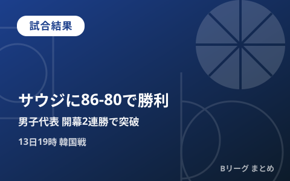

男子日本代表、サウジアラビアに86-80で競り勝ち開幕2連勝 カーク23得点10リバウンドで1次リーグ突破、13日は韓国戦

愛知国際アリーナ（IGアリーナ）で行われている「第20回アジア競技大会（愛知・名古屋2026）」バスケットボール競技で、男子日本代表は9月11日のグループA第2戦でサウジアラビア代表と対戦し、86-80で競り勝ちました。アレックス・カークが23得点10リバウンドのダブルダブルを記録し、初戦のインドネシア戦に続く開幕2連勝で1次リーグ（グループステージ）突破・準々決勝進出を決めています。9月13日19時にはグループA最終戦の韓国戦が控えています。
前半は16点リード、後半はサウジアラビアの猛追をしのぐ
日本は序盤からアレックス・カークがインサイドを支配する展開で試合の主導権を握りました。第1クォーターを25-15とリードすると、第2クォーターも加点を重ねて51-35とし、16点リードでハーフタイムを折り返しました。しかし後半に入るとサウジアラビアが猛反撃を見せ、第3クォーター終了時点では68-55まで点差を詰められる苦しい展開に。終盤も一進一退の攻防が続きましたが、日本は最後まで踏みとどまり、86-80で逃げ切って開幕2連勝としました。
カークが23得点10リバウンド、黒川はチーム最多8アシスト
個人成績では、チーム最年長のアレックス・カークがチーム最多の23得点に加えて10リバウンドを記録し、ダブルダブルで勝利に貢献。山﨑一渉と小川敦也がともに12得点、川島悠翔が7得点と続き、司令塔の黒川虎徹はチーム最多となる8アシストを記録してオフェンスをけん引しました。
| 選手 | 主な成績 |
|---|---|
| アレックス・カーク | 23得点・10リバウンド |
| 山﨑一渉 | 12得点 |
| 小川敦也 | 12得点 |
| 川島悠翔 | 7得点 |
| 黒川虎徹 | 8アシスト（チーム最多） |
2連勝で1次リーグ突破、13日は首位を懸けた韓国戦
男子日本代表はグループAで大韓民国・サウジアラビア・インドネシアと同組。前回の記事でお伝えした初戦のインドネシア戦（98-53）に続き、サウジアラビア戦も制したことで、2連勝の時点で1次リーグ突破・準々決勝進出が確定しました。9月13日19時に行われるグループA最終戦の韓国代表戦は、すでに突破が決まった中でグループ首位通過を懸けた一戦となります。
| 日程 | 対戦カード | 結果／時刻（日本時間） |
|---|---|---|
| 9月10日（木） | 日本 vs インドネシア | 98-53で勝利 |
| 9月11日（金） | 日本 vs サウジアラビア | 86-80で勝利 |
| 9月13日（日） | 日本 vs 大韓民国 | 19:00開始予定 |
見どころ
2試合続けて終盤に追い上げられる苦しい展開となった日本ですが、若手中心のメンバーとベテラン・カークの経験がかみ合い、着実に白星を重ねています。すでに準々決勝進出を決めているとはいえ、13日の韓国戦はグループ首位通過や決勝トーナメントの対戦順に影響する重要な一戦です。地元開催の後押しを受けて3連勝でグループステージを終えられるか、注目が集まります。当サイトでは試合結果が判明次第、続報をお届けします。
Q. 1次リーグ突破が決まっているのに韓国戦を戦う意味は？
A. グループステージの成績（順位）によって決勝トーナメント1回戦の対戦相手や会場が変わる方式のため、首位で通過できるかどうかは今後の戦いやすさに直結します。詳細なレギュレーションは大会公式サイトでご確認ください。
出典：バスケットボールキング「カークが23得点10リバウンドの大活躍…バスケ男子日本代表、サウジを振り切り開幕2連勝」／共同通信「バスケ日本、2連勝で準々決勝へ アジア大会男子1次リーグ」／中日新聞Web「食らい付いてくる相手に耐え続け、日本がサウジアラビアに勝利 1次リーグを突破」ほか
https://news.yahoo.co.jp/articles/787dbb36ec540aa28040028ceb0205024705d2b6
https://news.yahoo.co.jp/articles/b8b53d9a850edd4411da58795e67313df98cd614
https://www.chunichi.co.jp/article/1310091